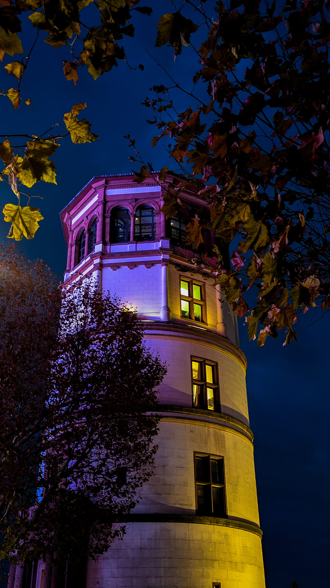
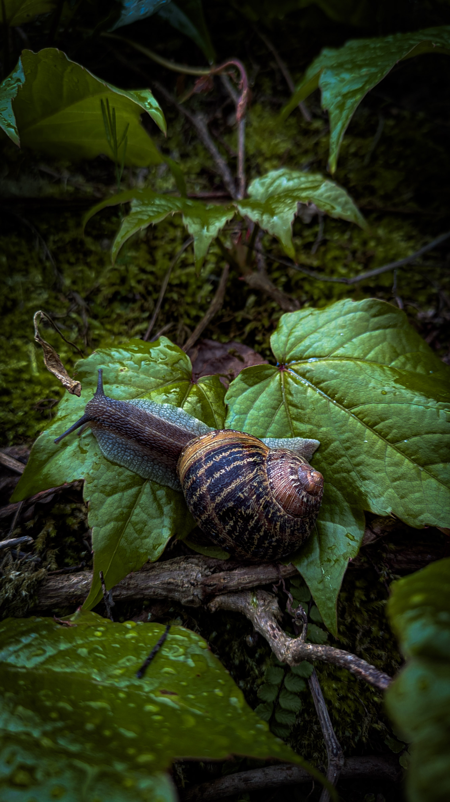
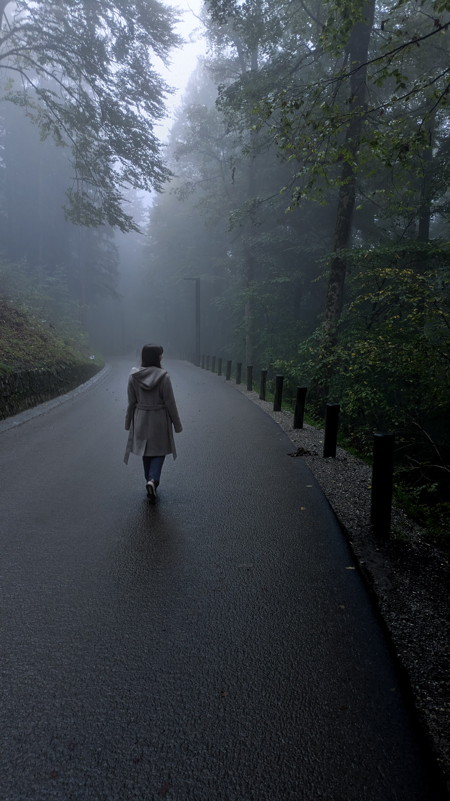
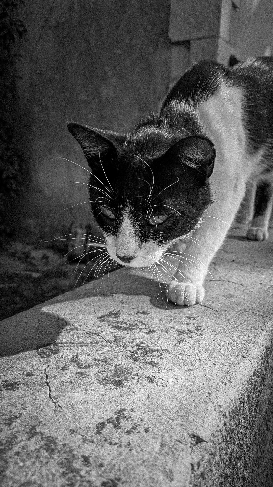

About Me
I like to express my creativity in different ways, and one of them is this website you are currently visiting. My name is Alicia Baez, and I enjoy bringing new ideas to life. Besides painting, I have always been fascinated by how photos can quickly evoke strong emotions. I want to highlight everyday motifs from new perspectives and make them available for as many people as possible to enjoy.
Photography
Urban poetry. Everyday stillness. Natural light.








×